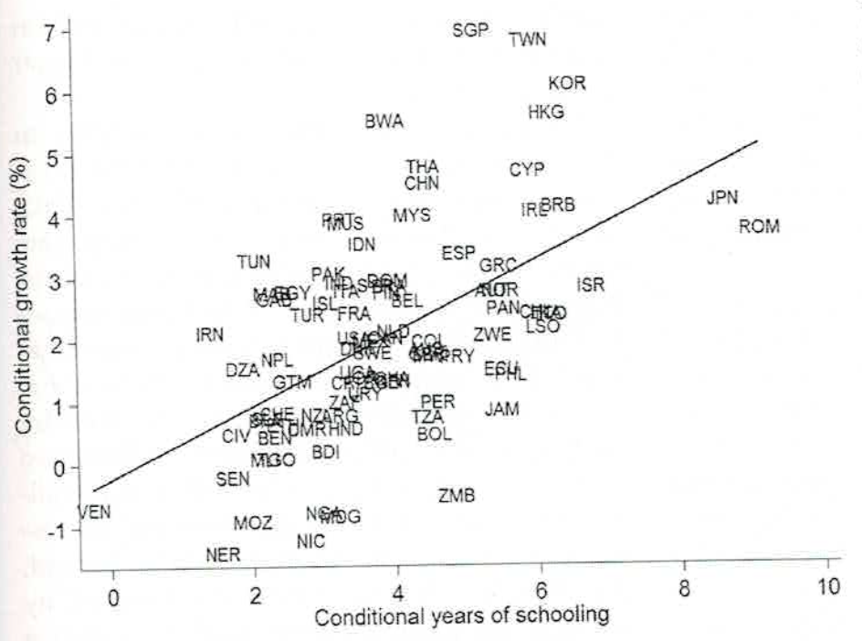
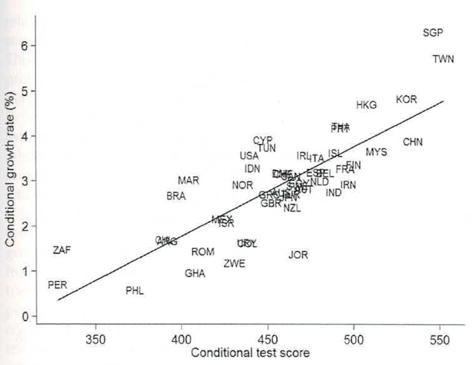
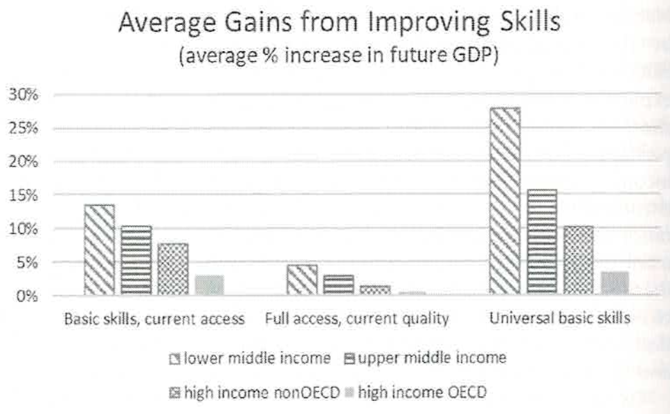

8 教育と経済成長
8.1 学習目標
- 新古典派成長理論における収束性の考え方と、その限界を理解する
- 人的資本が経済成長モデルにどのように組み込まれるかを理解する
- 内生的成長理論の直感的な意味を理解する
- 成長会計の考え方（Schultz・Denison）を理解する
- 教育の「量」と「質」が経済成長に与える効果の違いについて、実証研究の知見を理解する
- 教育の外部性と政府の役割について理解する
なぜ、国によって経済成長率が違うのでしょうか？
以下の問いについて考えてみましょう。
個人ワーク（5分）
- 国によって経済成長率が異なるのはなぜか、思いつく理由をできるだけ多く挙げてみましょう。
- 「教育水準」は経済成長に影響すると思いますか？するとすれば、どのような仕組みで影響するでしょうか？
ペアワーク（5分）
- お互いの意見を共有し、議論しましょう。
考え方の整理
経済成長率の差異をもたらすと考えられる要因は多岐にわたります。
- 物的資本（機械・設備・インフラ）の蓄積量
- 労働力の量（人口・労働参加率）
- 技術水準・イノベーション
- 制度の質（法の支配・財産権・腐敗の少なさ）
- 貿易の開放性
- 教育水準・人的資本の質
この授業では特に「教育」に焦点を当て、これが経済成長にどのような経路で影響するかを学びます。
8.2 1. なぜ国によって経済成長率は違うのか
経済成長を考える出発点
教育は、経済成長に対してどのような影響を及ぼすでしょうか。教育水準が高まるほど労働生産性が高まり、経済成長のペースが速くなるというのが通常の考え方です。その考え方の前提にあるのは、これまでの授業で学んできた人的資本論の発想です。一方、教育がシグナリング機能を発揮するだけなら、教育と経済成長は基本的には無関係となります。
これまでの実証分析を概観すると、Barro（1991）、Levin and Revelt（1992）、Barro and Sala-i-Martin（1995）をはじめとして、推計の開始時点の就学率や平均的な就学年数と、その後の経済成長率との間には正の相関が見られることが多くの実証分析によって確認されています。
しかし、この正の相関は、教育から経済成長への因果関係を必ずしも示すものではありません。教育が経済成長にまったく影響を及ぼさないと考えるのも不自然ですが、そのメカニズムはどのように説明できるのでしょうか。本節ではまず、経済成長に関する最もオーソドックスな理論から出発しましょう。
（出典：小塩 第6章 冒頭、pp.165–166）
新古典派成長理論の基本的な考え方
最初に、Solow（1956）らによって打ち立てられた新古典派成長理論の考え方を確認しましょう。
新古典派成長理論の最も基本的なモデルでは、資本ストック \(K\) と労働力 \(L\) という2つの生産要素が想定されるとともに、貯蓄率 \(s\)、人口（労働力）の増加率 \(n\) は外生的に与えられます。このモデルでは、資本ストックは物的資本、あるいは非人的資本（non-human capital）であるとみなされ、人的資本は登場しません。労働力は、あくまでもフロー・ベースのインプットとして生産に寄与すると想定されています。
ここで、コブ＝ダグラス型の生産関数を仮定し、\(t\) 時点における所得（生産量）\(Y\) を、
\[Y_t = AK_t^\alpha L_t^{1-\alpha}, \quad 0 < \alpha < 1 \tag{1}\]
として表現しましょう。\(A\) は正の定数、\(\alpha\) は資本分配率を表しています。この生産関数では、生産が資本ストックと労働力に関して収穫一定となっています。
この式において重要な性質は、収穫逓減です。資本ストック \(K\) が増えれば生産量は増えますが、その増え方は次第に小さくなります。机の上の電卓を10台から20台に増やしても、1台から2台に増やしたときほど生産性は上がらない、というイメージです。
（出典：小塩 第6章 第1節「新古典派成長理論の考え方」、pp.166–167）
収束性（コンバージェンス）という予言
新古典派成長理論から、非常に重要な予言が導かれます。それが収束性（convergence）です。
1人当たり資本ストックが小さい（つまり現在は貧しい）国ほど、資本の限界生産性が高いため、投資リターンが高く、経済成長率が速くなります。逆に、すでに豊かな国では資本が十分に蓄積されているため、追加的な投資の効果が小さく、成長率は遅くなります。
「大雑把な言い方をすれば、1人当たり所得の水準から見て貧しい（豊かな）国ほど、1人当たりの所得が早く（遅く）増加することになり、経済格差は縮小に向かう。」（小塩 第6章 p.168）
つまり、時間さえかければすべての国の1人当たり所得は同じ水準（定常解）に収束するというのが、新古典派成長理論の予言です。
（出典：小塩 第6章 第1節、pp.167–170）
収束性は現実に確認できるか？
ところが、そうした収束傾向は、実際には確認できないことがすでに多くの経済学者によって指摘されています。Barro（1991）の研究では、1960年時点における1人当たりGDPと、その後の25年間における1人当たりGDP成長率の間には有意な相関は見られませんでした（サンプルは98カ国）。
このように、通常の新古典派成長理論では現実が説明できないという大変困ったことになります。このパズルの解き方としては、2つのアプローチが考えられます。
第1のアプローチは、新古典派成長理論はとりあえず想定するものの、成長率格差を説明する要因を、当初の所得水準の違い以外から探し出すことです。人的資本がそこで登場します。
第2のアプローチは、新古典派成長理論の考え方自体を否定し、まったく新たな発想で成長率の非収束性を説明する理論を組み立てることです。この考え方が内生的成長理論と呼ばれるものです。
（出典：小塩 第6章 第1節、pp.170–171）
8.3 2. 人的資本と経済成長
新古典派成長理論に人的資本を組み込む
第1のアプローチとして、生産関数に人的資本 \(H\) を明示的に加えることで、成長率格差を説明しようとする試みがあります。
新古典派の枠組みを維持しつつ、物的資本や労働だけでなく人的資本も考慮した拡張型生産関数を、
\[Y_t = AK_t^\alpha H_t^\beta L_t^{1-\alpha-\beta}, \quad 0 < \alpha, \beta, \quad \alpha + \beta < 1 \tag{7}\]
と置いてみましょう。\(\alpha + \beta < 1\) だから、この生産関数は物的資本および人的資本に関して収穫逓減となっていることに注意してください。
このモデルでも同様に動学メカニズムを分析することができます。\(\alpha + \beta < 1\) だから、\(k\)、\(h\)（1人当たり物的資本・人的資本）、\(y\) の定常解が存在することになり、その値が各国の長期的な1人当たり所得水準を決めます。
重要な含意は、物的資本や人的資本の蓄積ペースが各国で異なっていることが、経済格差がなかなか縮小しない理由であるということです。この解釈に基づけば、新古典派成長理論は「条件付き収束性（conditional convergence）」という性格を持っているといえます。つまり、同じ定常解を持つ国々の間では収束が見られるが、定常解が異なれば収束しない、ということです。
（出典：小塩 第6章 第2節「新古典派成長理論と人的資本」、pp.171–173）
Mankiw, Romer and Weil（1992）の実証
こうした理論的な枠組みを実際に実証分析に乗せたのが、Mankiw, Romer and Weil（1992）です。彼らの論文では、式（8）の考え方に基づいたクロスセクションの回帰分析が行われています。1960年と1985年の間で1人当たりGDPの対数値がどれだけ変化したかを被説明変数とするとともに、貯蓄率、教育投資率（労働力人口のうち中等教育を受けた者の比率をその代理変数としている）や人口増加率（技術進歩率と資本減耗率を付加）、そして1960年の1人当たりGDPを説明変数とする回帰分析を行うと、理論モデルにかなり整合的な結果が得られることが示されています。
この分析は、教育を含む人的資本の蓄積が経済成長に実際に貢献していることを、データで裏付ける初期の重要な試みでした。
また、Carnoyが紹介するように、Mankiw et al.（1992）は「効率単位の労働（efficiency units of labor）」という概念を導入し、技術進歩が労働生産性を高めるという効果を明示的にモデルに組み込みました。教育を含む人的資本は、この効率単位の高さを規定する重要な要因とみなされています。
（出典：小塩 第6章 第2節、pp.172–174；Carnoy 第9章 第9.3節、pp.122–126）
人的資本を成長モデルに組み込むという発想は、第2回で学んだ人的資本理論（Becker・Schultz・Mincer）の延長線上にあります。個人レベルでは「教育を受けると賃金が上がる」という議論でしたが、マクロ経済レベルでは「国全体の教育水準が高まると、経済成長率が高まる」という議論になります。
また、第7回で学んだ技能形成と内生的成長理論の「Learning by doing」（Arrow 1962）とも接続しています。個人の職場での学習が積み重なることで社会全体の知識・技術ストックが蓄積され、それが経済成長に反映されるという考え方は、まさに第3節で紹介する内生的成長理論の核心です。
8.4 3. 内生的成長理論：なぜ格差は縮まらないのか
新古典派成長理論の限界と内生的成長理論
前節では、新古典派成長理論の考え方を紹介するとともに、その考え方からすれば縮小するはずの経済格差が縮小しない事実をどのように解釈するかという問題を取り上げました。しかし、新古典派成長理論はもともと収束性という特徴を持っているので、経済格差の問題を議論する場合にはやや無理が出てきます。
むしろ、収束性を想定しないモデルをはじめから打ち立てた方が、経済格差が持続するという現実をよく説明できるのではないかという発想も出てきます。新古典派成長理論の収束性の最も基本的な要因は、生産関数が資本ストック（物的・人的のいずれ対しても）に関して収穫逓減であるという想定でした。その想定を取り外し、広い意味での資本ストックが永続的な経済成長をもたらすことを示した成長理論が内生的成長理論（endogenous growth theory）です。
（出典：小塩 第6章 第3節「内生的成長理論の考え方」、p.174）
AKモデル：最もシンプルな内生的成長理論
内生的成長理論には様々なバリエーションがありますが、なかでも Rebelo（1991）の「AKモデル」は最も簡潔で、しかも、経済格差の持続性を直接的に説明してくれます。
いま、生産関数が資本ストックに関して収穫一定であると想定し、
\[Y_t = AK_t \tag{9}\]
と置いてみましょう。ここで、\(A\) は正の定数であり、\(K\) は資本ストックですが、この資本ストックは物的資本だけでなく、人的資本や知識、金融資本などあらゆる種類の資本ストックを含む広い概念のものです。教育や研究体制なども、そこに含まれます。
資本蓄積のメカニズムが式（9）のように与えられると、1人当たり資本ストックは \(As - n\) という一定の速度で蓄積されます。つまり、1人当たり資本ストックは特定の値に収束することなく、同じペースで拡大または縮小を続けることになります。
クロスセクションで見ると、たとえ \(A\)、\(s\)、\(n\) という3つのパラメータが同じであっても、当初の資本ストック（したがって当初の所得）が他より低い国は、いつまで経っても相対的に貧しい国にとどまります（図6-3を参照）。逆に、それらのパラメータが異なると、資本ストックや経済の成長率が相対的に低い国は、いつまでも低成長国にとどまることになります。この非収束性は、現実の世界経済の動きと整合的です。
AKモデルは非常にシンプルですが、重要な含意を持っています。AKモデルの世界では、教育や研究開発投資によって広義の資本ストック \(K\) を増やすことが、永続的な経済成長を生み出します。つまり、教育への投資は経済成長に対して持続的なプラス効果をもたらしうるのです。
（出典：小塩 第6章 第3節、pp.174–175）
人的資本と内生的成長理論：Lucasモデル
AKモデルでは、人的資本の蓄積メカニズムが明示的に捉えられているわけではありません。内生的成長理論の中には、人的資本の蓄積メカニズムを明示的に捉えたものもあります。その代表的な例の1つが、Lucas（1988）のモデルです。
Lucas は、家計が自分の生活時間を労働と人的資本の形成にどのように振り分け、また、所得のうちどれだけを貯蓄に回せば、家計の将来に向けての効用が最大化されるかという問題を取り上げ、しかも教育（人的資本）の外部性を踏まえて人的資本や経済成長のメカニズムを検討しています。
Lucasモデルを極めて簡略化すると、以下のように整理できます。物的資本と人的資本をともに考慮した生産関数は、
\[Y_t = AK_t^\alpha H_t^{1-\alpha}, \quad 0 < \alpha < 1\]
として表現されます。そして、人的資本については、毎年 \(g_h \times 100\%\) だけ蓄積されていくと考えてみましょう。このモデルは新古典派成長理論の最も基本的なモデルのうち、労働力 \(L\) を人的資本 \(H\) に、人口増加率 \(n\) を人的資本の蓄積率 \(g_h\) に置き換えたものと読み替えてよいでしょう。
したがって、このモデルは新古典派成長理論の場合と同じロジックで収束し、定常状態における経済成長率は人的資本の蓄積率 \(g_h\) に一致します。つまり、長期的な経済成長率は、人的資本（教育）をどれくらいの速さで蓄積していくかによって決まるのです。
各国の経済成長率が各国で異なる人的資本の蓄積率によって規定されることになるため、AKモデルと同様に国別に見た1人当たりの所得格差は縮小せずに持続することが、このモデルでも基本的に成立しています。人的資本の蓄積率こそが、その格差を生み出す原因になっています。
（出典：小塩 第6章 第3節、pp.175–177）
学習効果と経済成長：Romerモデル
内生的成長理論にはほかにも様々な類型があります。特に興味深いのが、生産活動における学習効果（learning-by-doing）が外部経済効果と組み合わさることによって経済成長に大きな影響を与えるという考え方です。この考え方は、Arrow（1962）の「学習」（learning-by-doing）モデルを嚆矢とするものですが、経済成長のメカニズムとして厳密にモデル化したのは Romer（1986）です。
Romer は、（新古典派成長理論が想定するように）各企業の生産関数が資本ストックと労働力に関して収穫一定であったとしても、社会全体では、各企業が培ってきた生産技術やノウハウ——それを「知識」と総称しましょう——が伝播し、それが各企業の生産にプラスに機能するという、「マーシャル的外部経済」を想定します。そして、その知識は、企業の生産活動や経験を通じて習得されるものとされます。つまり、知識を生み出す学習効果とそれが生産を促進する外部性を組み合わせることにより、経済成長の内生的なメカニズムを考えるわけです。
モデルを数式で確認しましょう。各企業 \(i\) の生産関数は、
\[Y_i = AK_i^\alpha L_i^{1-\alpha} G_t\]
と表されます。ここで \(G_t\) は社会全体で共有される知識ストックであり、個々の企業はこれを所与（自分のものではない外部からの恩恵）として受け取ります。そして知識は、これまでの1人当たり資本ストックの蓄積によって決まると仮定します。
\[G_t = k_t^\eta\]
ここで \(\eta > 0\) は、1人当たり資本ストックが1%増加したときに知識が何%高まるかを示す弾力性です。これを代入すると、社会全体の生産関数は、
\[Y_t = AK_t^\alpha L_t^{1-\alpha} k_t^\eta\]
となります。\(\alpha + \eta < 1\) のときは新古典派成長理論と同じ収束性が成立し、\(\alpha + \eta = 1\) のときはAKモデルと同じ構造になり、\(\alpha + \eta > 1\) のときは経済が指数的に拡大し続けます。
個々の企業は \(G_t\)（社会全体の知識ストック）を自分の力で制御できません。ある企業が生産活動を通じて新しい知識を生み出すと、それは社会全体に伝播し、他の企業の生産性も高まります。この「意図せず他者の生産性を高める」という効果が外部性です。
したがって、各企業は自分の投資（\(K_i\)）の収益率しか考慮せず、社会全体の知識蓄積（\(G_t\) の増加）への貢献を投資判断に含めません。これが市場に任せると社会的に最適な水準より投資・知識蓄積が少なくなる理由であり、政府の介入（教育補助・研究開発支援など）を正当化する根拠の一つとなります。
Romer のモデルは、生産活動における学習効果が外部経済効果と組み合わさることによって経済成長に大きな影響を与え、しかも経済格差を拡大する可能性を潜在的に持っていることを示唆するものです。
このモデルからの重要な含意は、教育が単に個人の生産性を高めるにとどまらず、知識の普及・技術革新を加速させる社会全体への波及効果（外部性）を持つということです。より教育水準が高い労働力は、科学的な発見の速度を高め、新しい技術を生産プロセスに採用・実装する能力を高めます。これが内生的成長の源泉となります。
（出典：小塩 第6章 第3節、pp.177–179；Carnoy 第9章 第9.3節、pp.122–123）
| モデル | 収束性 | 人的資本の扱い | 長期成長率の決まり方 |
|---|---|---|---|
| 新古典派成長理論（Solow） | あり | なし（労働は量のみ） | 外生的（技術進歩率） |
| 拡張Solowモデル（Mankiw et al.） | 条件付きあり | 生産要素として追加 | 外生的（技術進歩率） |
| AKモデル（Rebelo） | なし | 広義の資本に含む | 内生的（貯蓄率・資本生産性） |
| Lucasモデル | なし（一定成長） | 蓄積メカニズムを明示 | 内生的（人的資本蓄積率 \(g_h\)） |
| Romerモデル | 条件による | 知識外部性として | 内生的（学習効果×外部性） |
8.5 4. 成長会計：教育はどれだけ経済成長に貢献してきたか
「残差」の謎から始まった
経済学において教育と経済成長の関係を実証的に分析しようとした最初期の試みは、成長会計（growth accounting）と呼ばれるアプローチです。
第二次世界大戦後、冷戦の深刻化とともに経済成長の源泉を解明しようとする研究が盛んになりました。当時の経済学者たちは、従来の投入要素——すなわち労働時間の増加と物的資本ストックの増加——によってコブ＝ダグラス型生産関数から予測される成長率を計算しました。ところが、先進国の経済成長のうち、こうした従来型の投入要素では約50%しか説明できないことが判明しました。残りの50%は「技術変化」という名のブラックボックスに帰せられていました。
そこで、経済学者たちは労働の「質」の変化——つまり、教育水準の向上——を測定することに取り組みました。Schultz（1963）の言葉を借りれば、「観察された成長を観察された従来型の生産要素の増加によって説明することはできなかった。最もよい手がかりは、教育の量が急速に増加しているが、それが人間の努力の生産性に対してどのような効果を持っているのかを見ることだ」ということです。
（出典：Carnoy 第9章 第9.2節、pp.119–120）
Schultz（1961）とDenison（1962）の分析
Theodore Schultz（1961）とEdward Denison（1962；Denison & Poullier, 1967）は、教育が経済成長に果たす貢献を推計した最初の試みを行いました。
彼らが用いたコブ＝ダグラス型生産関数の対数線形形式は、
\[\log Y = A + \alpha L + \beta K \tag{9.1}\]
という形式です。ここで、\(Y\) は財とサービスの総産出量、\(L\) は労働投入量（年間の総労働時間数）、\(K\) は資本投入量（機械・設備・建物の価値を資本の平均価格で割ったもの）、\(A\) は全要素生産性、\(\alpha\) と \(\beta\) はそれぞれ労働と資本の産出弾力性です。完全競争のもとでは \(\alpha + \beta = 1\) であり、\(\alpha\) と \(\beta\) は国民総産出に占める賃金と資本収益の分配率を示します。
両辺を微分することで、産出の成長率を以下のように表せます。
\[(dY/Y)_t = \alpha (dL)_t + \beta (dK)_t \tag{9.2}\]
ここで、労働投入の質的成分 \(Q_L\) を考慮すると、
\[\alpha [d(L \times Q_L)] = \alpha [dL \times Q_L + dQ_L \times L] \tag{9.3}\]
となります。つまり、労働の成長への貢献は2つの成分に分けられます。第1は、労働時間の増加 × 平均的な就学水準という項です。第2は、労働の質の向上（\(Q_L\) の変化）という項です。
なぜ式(9.2)の \(\alpha(dL)\) が式(9.3)の \(\alpha[dL \times Q_L + dQ_L \times L]\) になるのか？
式(9.2)の労働項 \(\alpha(dL)\) では、労働 \(L\) を「量（人数・時間）」としてのみ扱っています。しかしSchultzとDenisonは、「労働投入は量だけでなく質によっても異なる」と考え、労働投入を
\[L \;\longrightarrow\; L \times Q_L\]
と置き換えました。\(Q_L\) は労働の質（例：平均就学年数）を表す指標です。
これを式(9.2)の労働項に代入すると、
\[\alpha(dL) \;\longrightarrow\; \alpha\bigl[d(L \times Q_L)\bigr]\]
ここで、\(L\) も \(Q_L\) も時間とともに変化する変数ですので、積の微分法則（product rule）を適用します。
\[d(L \times Q_L) = dL \times Q_L + L \times dQ_L\]
これは、\(f \cdot g\) の微分が \(f'g + fg'\) になるのと同じ考え方です。両辺に \(\alpha\) をかけると、
\[\alpha\bigl[d(L \times Q_L)\bigr] = \alpha\bigl[dL \times Q_L + dQ_L \times L\bigr]\]
これが式(9.3)です。
2つの項の経済的な意味
\[\underbrace{\alpha \cdot dL \times Q_L}_{\text{第1項：量の効果}} + \underbrace{\alpha \cdot dQ_L \times L}_{\text{第2項：質の効果}}\]
- 第1項：労働者数・時間が増えたことによる成長への貢献。既存の質 \(Q_L\) を保ったまま量が増える。
- 第2項：労働の質が上がったことによる成長への貢献。人数は変わらず、1人ひとりの就学水準 \(Q_L\) が上昇する。
具体例で確認： 労働者が100人（\(L = 100\)）、平均就学年数が10年（\(Q_L = 10\)）のとき、
- 労働者が5人増えた（\(dL = 5\)）→ 第1項：\(5 \times 10 = 50\)
- 平均就学年数が1年延びた（\(dQ_L = 1\)）→ 第2項：\(100 \times 1 = 100\)
第2項（質の効果）の方が大きいことがわかります。SchultzとDenisonが注目したのはこの第2項であり、教育水準の向上（\(dQ_L\)）が労働者全体 \(L\) に掛け算で波及するため、経済成長への貢献が生まれるという考え方です。
Schultzの推計結果： 就学年数の増加（1年間の通学日数の増加を調整済み）は、1909年の6.01年から1957年の10.45年に増加し、この増加が同期間における米国の計測された成長のほぼ約1/5（20%）を説明することを示しました。
Denisonの推計結果： 労働力における就学の量は年率2%強増加しており、1929年から1957年の米国経済成長の約21%が教育の増加によって説明できるとしました。また、1950〜1962年の西ヨーロッパ9カ国についても分析を行い、教育投資の増加の成長への貢献は国によって大きく異なることを示しました。
（出典：Carnoy 第9章 第9.2節、pp.119–122）
成長会計アプローチの限界
ShultzとDenisonによる成長会計アプローチは歴史的に重要でしたが、その方法論には重要な限界があります。
最大の問題は、因果関係の仮定が前提とされている点です。このアプローチは、就学への総投資の増加と産出の増加との間に「因果性」があるという論争的な仮定に基づいていました。Schultzの場合は収益率全体を、Denisonの場合は収益率の60%を、就学そのものの直接的効果に帰していました。
しかし現実には、収益率の相当部分は、そこで学んだことではなく、社会階層・初期能力、さらには性別・人種・民族による差別に起因するかもしれません。Schultzが同じ仮定をDenisonと同様に置いていたとすれば、教育の成長への貢献は1929〜1957年期間で10%、1909〜1929年期間で5%にとどまった可能性があります。
逆に、Schultz と Denison は、教育投資の増加の外部性（それが用いる計算での収益率を引き上げることになる）を過小評価していたかもしれません。
こうした限界を踏まえつつ、以降の研究はよりクロスカントリーな比較を通じて、教育と経済成長の関係をより精緻に分析しようとしてきました。
（出典：Carnoy 第9章 第9.2節、pp.121–122）
成長会計の考え方を整理しよう
個人ワーク（5分）
上で説明した成長会計の考え方をもとに、以下の問いを考えてみましょう。
従来の生産要素（労働・資本の量）だけでは成長の約半分しか説明できなかったのはなぜでしょうか？「残差」には何が含まれると思いますか？
Schultz や Denison のアプローチには「因果性の仮定問題」があるとされています。どのような問題でしょうか？（ヒント：第2回の「能力バイアス」「セレクション・バイアス」と同じ問題が国家レベルで起きていると考えてください。）
ペアワーク（3分）
お互いの答えを共有しましょう。
解答例
問1：「残差」には何が含まれるか
従来の生産要素（労働の量・資本の量）だけでは成長の約半分しか説明できなかった理由は、経済成長には「量」以外の要因が大きく貢献しているからです。
「残差」に含まれると考えられるものとしては、以下が挙げられます。
教育・訓練による労働の質の向上
同じ人数・時間でも、教育を受けた労働者の方が高い生産性を発揮します。Schultzらが注目したのはまさにこの点です。技術進歩・イノベーション
新しい機械・生産方法・ICTなど、同じ投入量でもより多くを生産できるようにする技術革新です。Solowはこれを「全要素生産性（TFP）」と呼びました。制度・組織の改善
法の支配・財産権の保護・市場制度の整備など、経済活動の効率を高める制度的要因です。規模の経済・知識の外部性
EUの形成（Denisonが指摘）のように、市場規模が拡大することで生産効率が上がる効果や、Romerが示した知識の波及効果などです。
問2：「因果性の仮定問題」とはどのような問題か
Schultz・Denisonのアプローチの核心的な問題は、「教育投資の増加が成長をもたらした」という因果関係を、相関関係から直接仮定してしまっている点です。これは国家レベルで起きる「能力バイアス」・「セレクション・バイアス」に相当します。
個人レベルとの対応関係
| 個人レベル（第2回） | 国家レベル（今回） |
|---|---|
| 能力の高い人ほど大学に進学し、かつ高賃金を得る → 「教育の効果」を過大推計 | もともと経済が豊かな国ほど教育投資でき、かつ成長も速い → 「教育の効果」を過大推計 |
| セレクション：進学を選ぶ人はもともと有利な属性を持つ | セレクション：教育水準が高い国はもともと制度・インフラが充実している |
「教育を受けた人が多い国ほど成長率が高い」という相関を観察したとき、次の2つの解釈が成り立ちます。
- 解釈A（Schultzらの仮定）：教育 → 生産性向上 → 経済成長
- 解釈B（逆因果）：もともと豊かな国・成長している国 → 教育投資の余裕がある → 就学年数が増える
後者の可能性を排除しない限り、「教育が成長をもたらした」とは言えません。さらに、収益率の一部は「学校で学んだこと」ではなく、社会階層・生まれながらの能力・性別・人種・民族的差別などに起因する可能性もあります。
つまり、Schultz・Denisonは「収益率の増加 ＝ 教育の直接効果」と仮定しましたが、現実には収益率には教育以外の要因（もともとの経済力・制度・能力差など）も混入しており、教育の純粋な効果を取り出せていないという問題があります。これを解決しようとしたのが、後の操作変数法・因果推論の発展につながります（本章第6節参照）。
8.6 5. 教育の「量」と「質」：実証研究が示すもの
就学年数（量）の研究
1980年代後半以降、長期にわたる国際的な経済産出・教育・投資データが利用可能になり、クロスカントリー分析が大幅に発展しました。この流れの中で、成長モデルも典型的な国内の成長会計モデルから、国際比較分析へとシフトしました。
就学の量（就学年数）を用いた主要な実証研究として、Barro（1991, 2001）、Mankiw et al.（1992）などがあります。これらの研究では、GDPの1人当たり成長率の数十年にわたる平均年率を、就学の何らかの指標に回帰させる手法をとっています。
使用された教育指標としては、識字率、初等・中等教育の総就学率・純就学率、25歳以上成人の平均就学年数の初年度値、中等教育以上の男性比率などが挙げられます。これらの研究は、教育の平均水準と成長率の間に概ね有意な正の相関を見出しており、また、就学年数よりもテストスコアの方が成長との相関がより強いことも示しています。
以下の図（Hanushek & Woessmann（2015a））が示すように、就学年数と経済成長の間には基本的な正の相関が存在します。この基本的な関係式は、就学の1年増加が0.58%ポイント高い長期成長率と関連していることを示しています。

（出典：Carnoy 第9章 第9.3節、pp.123–126；Bradley 第14章、pp.171–173）
「量」の研究に対する懐疑的見解
しかし、就学年数を教育の代理指標として用いることに対して、重要な批判的見解も存在します。
Bils & Klenow（2000）は逆因果関係の問題を指摘しました。クロスカントリーの相関において逆の因果関係が走っている可能性、つまり経済成長が進むほど就学へのさらなる投資がなされるという可能性を示唆しています。
Pritchett（2001）は、単純な成長モデルの妥当性に疑問を提示しました。特に、就学年数に測定誤差が大きいこと、また発展途上国では高等教育を受けた人材の多くが公共部門に雇用され、比較的高い賃金を受けているが、必ずしも労働効率の向上に大きく貢献しているわけではない、という点を指摘しています。
Krueger & Lindahl（2001）は、教育の水準（ある時点での就学年数の高さ）と変化量（就学年数がどれだけ増えたか）の両方が、10〜20年という長いスパンで見ると1人当たり成長率に正の効果を持つことを見出しました。 しかし、ここに落とし穴があります。1960年の1人当たり物的資本ストックの変化（つまり、その国がどれだけ機械・設備への投資を増やしたか）を説明変数に加えると、教育の効果の推計値が大きく変わってしまいます。教育の水準・変化量の効果は依然として正の値を示すものの、資本の分配率（GDPに占める資本収益の割合）を歴史的に「典型的な」水準である0.35に固定しない限り、ゼロとの統計的な有意差がなくなります。 つまり、物的資本と教育は互いに関連が深く（例：豊かな国ほど設備投資も教育投資も多い）、両方を同時に分析すると、教育だけの純粋な効果を切り出すことが難しくなるということです。この問題は、測定誤差・内生性とともに、クロスカントリー成長回帰が抱える根本的な課題の一つです。
（出典：Carnoy 第9章 第9.3節、pp.124–126；Bradley 第14章、pp.172–173）
「質」へのシフト：知識資本（knowledge capital）
こうした「量」の研究の限界に対して、教育の「質」——学習された認知能力の水準——を測定することの重要性が次第に認識されるようになりました。
ガーナやペルーの平均的な生徒は、フィンランドや韓国の平均的な生徒と就学の1年から同じ量の知識を身に付けるわけではありません。就学年数を用いたクロスカントリー成長分析では、これらの生徒が同等であると仮定していますが、これは明らかに問題のある仮定です。
1960年代中頃から、IEA（国際教育到達度評価学会）やOECDはTIMSS、PISAなどの国際テスト——数学や科学などの認知能力に関する生徒のパフォーマンスのテスト——を実施してきました。こうした認知能力の測定値を成長分析に組み込むことで、教育の経済発展への役割の評価が劇的に変わります。
Carnoyが紹介するように、この議論には教育の「量」と「質」のどちらを増やすべきかという、政策的に重要な対立軸が含まれています。
（出典：Carnoy 第9章 第9.4節、pp.126–128；Bradley 第14章、pp.173–174）
Hanushek & Kimko（2000）：質の重要性の発見
教育の質と経済成長の関係に関する初期の重要な研究として、Hanushek & Kimko（2000）があります。
彼らは1991年までの国際的な学力達成度テストのデータを用いて教育の質の指標を構築し、1960〜90年の経済成長に対する教育の質の影響が、就学の量の関連性をはるかに大きく上回ることを、統計的にも経済的にも有意な形で見出しました。
具体的には、PISA2000の数学で47テストスコアポイント（測定基準として使用されているOECD全国平均の1標準偏差に相当）高いテストパフォーマンスが、40年間にわたる平均年率成長において1パーセントポイント高い成長率と関連していることが示されました。
さらに重要なのは、教育の質を付け加えることによって、GDPの1人当たり成長率の分散を、初期所得と就学年数だけで含むモデルでの33%から73%へと大幅に引き上げたことです。一方、テストスコアを含めると、就学年数と成長の関連性は大幅に低下し、ほぼ無意味になります。
この2つの結果は、一見別々の話のように見えますが、セットで理解することが重要です。
前半（33%→73%）：モデル全体の説明力の話
「初期所得＋就学年数」だけのモデルに、テストスコア（教育の質）を追加すると、成長率の分散をより多く説明できるようになります。つまり質を加えることで、モデル全体がより現実をうまく説明できるようになったということです。
後半（就学年数が無意味になる）：各変数の個別の効果の話
テストスコアを同時に含めると、就学年数の係数がゼロに近くなります。これは、就学年数は単独では成長に影響しているように見えたが、実はテストスコアと相関していたから有意に見えていただけだということを意味します。
なぜそうなるかというと、就学年数が長い国ほどテストスコアも高い傾向（正の相関）があるからです。
\[\text{就学年数が長い} \;\rightarrow\; \text{テストスコアが高い} \;\rightarrow\; \text{成長率が高い}\]
つまり就学年数は、テストスコア（質）を通じて間接的に成長に貢献していたに過ぎず、テストスコアを直接コントロールすると、就学年数自体の効果は消えてしまうのです。
テストスコアはプロキシ（代理変数）
テストスコアは教育の質のプロキシ（代理変数）として使われています。ただしHanushek & Kimkoはさらに踏み込んで、テストスコアは「学校教育の質」だけでなく、家庭・社会全体の認知能力の水準（知識資本）を反映するものだと主張しています。学校だけでなく家庭・塾・社会環境などを含めた、その国全体の「認知能力を育てる力」の総体を測っているという位置づけです。
まとめ
| 内容 | |
|---|---|
| 33%→73% | 質（テストスコア）を加えるとモデル全体の説明力が大幅に上がった |
| 就学年数が無意味に | 質をコントロールすると就学年数自体には効果がなかった（質を通じた間接効果だった） |
| テストスコアの役割 | 教育の質のプロキシ、さらには社会全体の知識資本の代理指標 |
（出典：Carnoy 第9章 第9.4節、pp.126–127；Bradley 第14章、pp.173–174）
Hanushek & Woessmann（2015a）：「知識資本の国」
最新の包括的な証拠は、Hanushek & Woessmann（2015a）にまとめられています。
この研究では、1965年から2003年の間の12回の試験機会からの36の国際的な学力達成度テストに基づく、各国の認知能力の総体——知識資本（knowledge capital）——の一貫した指標を構築しています。この「知識資本」の測定値は、学校だけでなく、家庭や学校外でも発達する総合的な認知能力を示しており、学校、家庭、その他のいずれで技能が発達したかにかかわらず、すべてが含まれます。
主要な結果： 初期GDPと就学年数をコントロールした後で（Hanushek & Woessmann 2015a）、知識資本の測定値は1960〜2000年のGDP1人当たりの実質成長率に対して、高度に統計的に有意な正の効果を持ちます（図14.2参照）。この単純な特定化によれば、OECD全国平均のPISAで1標準偏差高いテストパフォーマンスを持つ国は、40年間にわたる年率成長率が2パーセントポイント高いです。
さらに、教育の質を含むモデルでは、就学年数と成長の関連性はゼロに近くなります。これは、就学年数が成長に正の関連性を持つのは、認知能力と相関があるからに過ぎず、年数そのものに成長促進の効果があるわけではないことを示唆しています。

この結果はOECDサンプルと非OECDサンプルで比較した場合でも顕著に類似しており、低所得国では高所得国よりも教育の質の効果が統計的に有意に大きいです。また、教育の質と成長の間の正の関係は、5つの世界地域内の変動を考慮しても有意であり、単に地域間の経済格差を反映しているわけではありません。
（出典：Bradley 第14章、pp.173–176；Carnoy 第9章 第9.4節、pp.126–127）
「量vs質」論争：Carnoyの批判的見解
Hanushek & Woessmannの「質重視」の主張に対して、Carnoy（2023）は重要な批判的視点を提示しています。
Breton（2011）の批判： Hanushek & Woessmannが成長を測定した期間（1960〜2000年）と、教育の「質」を測定した時点（多くが1990年代以降のテストスコア）に不一致があるという問題を指摘しています。Bretonが就学年数と認知能力の両方が経済成長に与える効果を再推計すると、「量」の方が「質」よりも成長との関係が強いという結果が得られます。
「量を増やすことでも認知能力は上昇する」という反論： Carnoyは、ブラジルや米国の事例を示しながら、中学・高校段階で就学年数を増やすことで、数学の認知能力が0.2〜0.3 SD向上することを示しています。就学年数の増加自体が認知スキルを高める重要な経路であり、「量」と「質」の二分法は偽りのものである可能性があります。
低中所得国がアクセス拡大を優先する政治経済学的理由： ほとんどの国の政府は、主に質の向上に集中するために高いレベルの教育へのアクセスを増加させる速度を落とそうとすれば、その正当性を危うくするでしょう。つまり、低・中所得国が質の向上よりも就学年数の増加を優先する傾向があるのは、政治的に支持されやすいからです。また、教育の質を向上させることは、相当なリソース、大きな政治的意志、そして長期にわたる卓越した行政的技術を必要とします。
（出典：Carnoy 第9章 第9.5節、pp.129–132）
アカデミアにおけるコンセンサスと論争
「質か量か」という問いは、一見すると決着がついているように見えますが、アカデミアでは現在も論争が続いています。ここで立ち止まって、研究者間の立場の違いを整理しておきましょう。
現在の大まかなコンセンサス
一般的にアカデミアでは、Hanushek & Woessmannの「質重視」の立場の方が現在は優勢です。テストスコア（質）を加えると説明力が大きく上がり、テストスコアの方が就学年数より成長との関連が強いという結果は、多くの研究・地域・時期で繰り返し確認されています。
しかし、根本的な識別問題が残っている
Carnoyが指摘するように、質と量は互いに強く相関しています。就学年数が長い国ほどテストスコアも高い傾向があるため、回帰分析で両方を同時に含めると、どちらが本当に経済成長に効いているかを識別することが難しくなります。これは計量経済学でいう多重共線性（multicollinearity）に近い問題です。
さらに、就学年数を増やすこと自体がテストスコアを引き上げるという経路（量 → 質 → 成長）が存在するなら、「量は無意味」とは言い切れません。Carnoyとブラジル・米国の事例がそれを示しています。
研究者による立場の違い
| 研究者 | 立場 |
|---|---|
| Hanushek & Woessmann | 質（テストスコア）が決定的に重要。量はほぼ無意味 |
| Carnoy・Breton | 量も質も重要。識別が困難であり、量→質という経路もある |
| Krueger & Lindahl | 物的資本を統制すると両方の効果が不安定になる。測定誤差が深刻 |
| Pritchett | 途上国では就学年数を増やしても成長しない事例が多く、制度の問題が大きい |
公正な整理
「質か量か」に対するアカデミアの現時点での答えは、以下のようにまとめられます。
- 質の方が重要という証拠の方が強い
- しかし、量を完全に否定する証拠もない
- 両者の識別は計量的に難しい
- 特に途上国では量（アクセス）の拡大も依然として重要
Carnoyの批判は少数派ですが、重要な方法論的問題を突いており、完全に否定されているわけではありません。「テストスコアを上げれば成長する」という単純な政策的結論を引き出す前に、こうした論争の存在を念頭に置くことが大切です。
PISAスコアと経済成長について考えよう
個人ワーク（5分）
Hanushek & Woessmann（2015a）によると、国際テストスコアが1標準偏差高い国は、年率で2%ポイント高い成長率を示す傾向があります。
「日本はPISAスコアが高いため、経済成長も速い」という議論は成立するでしょうか？どんな点に注意が必要ですか？（ヒント：相関関係と因果関係の違い）
テストスコアを高めることを目標に設定することには、どのような利点と問題点があるでしょうか？
ペアワーク（5分）
お互いの考えを共有しましょう。
考え方の整理
「日本はPISAスコアが高いから成長も速い」という解釈には複数の問題があります。
- PISAスコアと成長率の間には相関関係はあっても因果関係が明確ではない（逆因果の可能性）
- 日本の場合、PISAスコアは高いが1990年代以降の経済成長は低迷しており、「高テストスコア = 高成長率」という単純な図式は当てはまらない
- 成長率には教育以外の多くの要因（制度の質・人口動態・物的資本・技術革新など）が影響する
- テストスコアを目標化（数値目標化）すると、「テスト対策」が優先され、真の認知能力や問題解決力の育成が後回しになる可能性がある
重要なのは、「テストスコア自体を上げること」ではなく、「それが測定しようとしている認知能力の実質的な向上」を目指すことです。
8.7 6. 因果関係はあるか：認知能力は本当に成長をもたらすのか
因果推論の難しさ
これまでの議論は、認知能力（テストスコア）と経済成長の間の強い相関関係を示してきました。しかし、この相関関係は因果的なものとして解釈すべきでしょうか。つまり、テスト成績が上がれば、本当に成長率は上がるのでしょうか。
この問いは、政策的に極めて重要です。もし因果関係がないとすれば、テストスコアの向上を目指す教育政策は成長を促進しないことになります。逆に、因果関係が存在するとすれば、教育の質の向上は経済成長の直接的な政策手段となります。
認知能力と成長の相関関係に対する主な懸念として、次のことが考えられます。良い経済環境を持つ国は良い学校システムも持つ傾向があり、それらの国が経済的な基本要因によってより速く成長するために、高いテスト成績を持っていることを意味するかもしれません（逆因果関係）。つまり、テストスコアは単に経済の他の重要な側面を反映しているだけで、成長の原動力ではないかもしれないのです。
（出典：Bradley 第14章、pp.176–177）
4つの因果性検証アプローチ
Hanushek & Woessmann（2012a）は、認知能力の違いが経済成長の有意な違いをもたらすという因果的解釈を支持する一連の因果性テストの証拠を提示しています。最も頻繁に指摘される問題点が結果に影響していないことを確認するためのものです。
第1のアプローチ：時間軸の分離
逆因果関係の最も明白な懸念は、分析が1960年から2000年の期間の成長率を、おおよそ同じ期間のテストスコアに関連付けているという事実に起因します。これに直接対処するため、1985年以降の成長期間に対して1984年までに実施されたテストのスコアの効果を推計しました。50カ国のサンプルで利用可能なこの分析では、テストスコアは厳密に成長期間より前のものとなり、増加した成長がテストスコアを高めていた可能性は排除されます。この分析は、初期のテストスコアが将来の成長率に対して、上に表示した効果のほぼ2倍の正の効果を示しています。
第2のアプローチ：操作変数法
逆因果関係が問題でないとしても、別の懸念が残ります。それは、文化という隠れた要因が、テストスコアと経済成長の両方を同時に引き上げている可能性です。
例えば「勤勉さ・学習を重視する文化」を持つ国では、
\[\text{文化（勤勉さ）} \rightarrow \text{テストスコアが高い}\] \[\text{文化（勤勉さ）} \rightarrow \text{経済成長も速い}\]
という2つの経路が同時に存在しうます。この場合、テストスコアと成長の間に相関が観察されても、それは文化という第三の要因が両方を同時に引き上げているだけであり、テストスコアが成長を「引き起こした」とは言えません。これは計量経済学でいう交絡因子（confounding factor）の問題です。
この問題に対処するため、国際的なテストスコアの違いが学校制度の制度的特性から生じる変動に注目し、操作変数法による成長関係の推計が行われました。操作変数として使用されたのは以下の4つです。
| 操作変数 | 内容 |
|---|---|
| 終了試験（exit exams） | 卒業時に全国統一試験があるかどうか |
| 学校の自律性（autonomy） | 学校が独自にカリキュラム・人事を決められるか |
| 相対的な教員給与 | 他職種と比べた教員の賃金水準 |
| 私立学校教育の割合 | 私立学校に通う生徒の比率 |
これらが操作変数として使える理由は、操作変数の2つの条件を満たすからです。第1の条件として、終了試験がある国では生徒が真剣に勉強するためスコアが上がる、教員給与が高い国では優秀な人材が教職に就くためスコアが上がる、といった形で、これらの制度的特性はテストスコアと相関します。第2の条件として、終了試験の有無や教員給与の水準は、文化や勤勉さとは直接関係なく、あくまで学校制度の設計の問題です。したがって、これらが経済成長に影響するとすれば、それはテストスコア（認知能力）を高めることを通じた間接的な経路に限られます。
\[\text{学校制度の特性} \;\rightarrow\; \text{テストスコア} \;\rightarrow\; \text{経済成長}\]
この操作変数法によっても本質的に同じ結果が得られたことは、「文化が両方を引き上げているだけ」という批判を退け、テストスコア→成長という因果関係がより信頼できることを示しています。認知能力の因果的解釈と、学校政策が直接的な経済収益を持ちうるという結論の両方が支持されます。
第3のアプローチ：米国内の移民データ
高い認知能力と強い経済成長の関係が因果的でないかもしれないことについての、さらなる懸念があります。それは、より良い経済環境を持つ国が、高い学力と高い成長率の両方を持つという可能性です。つまり、テストスコアが高いのは教育の質が高いからではなく、単にその国が豊かだからかもしれません。
この問題に対処するために、単一の労働市場（米国）の中で移民同士を比較するというアプローチがとられました。具体的には、以下の2グループを比較しています。
- グループA：本国（例：メキシコ）で教育を受けてから米国に移住した移民
- グループB：同じ出身国だが、米国で教育を受けた移民
この2グループは同じ米国の労働市場で働いているため、米国の制度・法律・経済環境はグループ間で共通しており、排除することができます。また、出身国（例：メキシコ）の文化・勤勉さも両グループに共通しているため、これも排除できます。残る違いは「本国の学校教育の質」だけです。
\[\text{本国の教育の質} \;\rightarrow\; \text{認知能力} \;\rightarrow\; \text{米国での賃金}\]
分析の結果、本国で教育を受けたグループAの方が高い賃金を得ていることが確認されました。これは、本国の教育が高い認知能力を育て、それが米国の労働市場でも評価されていることを意味します。したがって、テストスコアが単に出身国の文化的要因や経済的要因を反映しているだけという可能性は排除され、テストスコアは認知能力そのものを測定しているという解釈が支持されます。
なお、本国で教育を受けてから移住した人はそもそも能力が高いから移住できたという選抜バイアスの可能性も残ります。しかし同じ出身国の移民同士を比べることで、この問題はある程度コントロールされています。
第4のアプローチ：国内時系列変化
最後に、半世紀以上にわたって異なる時点でテストに参加してきた国については、時間の経過に伴うテストスコアの変化が成長率の変化にどう関係するかを観察することができます。
これは実質的に、国固定効果（country fixed effects）を入れたパネルデータ分析と同じ発想です。「テストスコアの水準が高い国ほど成長が速い」という国同士の比較ではなく、「テストスコアが上がった時期に、その国の成長率も上がったか」という各国をそれ自身と比較する分析です。数式で表すと、
\[\Delta \text{成長率}_{\text{国}i} = \beta \cdot \Delta \text{テストスコア}_{\text{国}i} + \epsilon\]
という形で、各国について変化量同士を関連付けています。これにより、各国に固有の時間を通じて変わらない要因——文化・地理・歴史的な制度——は自動的に差し引かれ、排除することができます。
例えば日本について言えば、「日本はもともとテストスコアが高く成長も速い国だ」という国固有の特性は固定効果として除去され、「日本のテストスコアがさらに上がった時期に、成長率も上がったか」という変化だけを分析することになります。
ただし、この分析にはOECD12カ国のみで可能という重要な限界があります。長期にわたって複数時点のテストデータが存在する国が少ないため、サンプルが小さく、結果の一般化には注意が必要です。それでも、テストスコアの時間的な変化は成長率の時間的な変化と非常に密接に関連しており、テストスコア→成長という因果関係をさらに支持する証拠となっています。
これらすべてのアプローチを総合すると、認知能力の違いが経済成長の有意な違いをもたらすという証拠は、概ね一貫して存在します。
（出典：Bradley 第14章、pp.176–178）
教育の質と経済制度の相互作用
教育の質が高まれば、それだけで経済成長が速くなるのでしょうか。実はそう単純ではありません。教育の効果は、その国の経済制度の質によって大きく変わります。
直感的に考えてみましょう。高い認知能力を持つ人材がいたとして、その能力がどこに向かうかは制度次第です。
- 制度が整っている国：優秀な人材が企業を起こしたり、技術革新に取り組んだりと、生産的な活動に能力が向かう
- 制度が整っていない国：優秀な人材が汚職・コネを使ったレント・シーキング（不正な利益の獲得）や、規制の抜け穴を探すことに能力が向かう
後者の場合、教育水準が高くても経済成長にはつながらず、場合によってはマイナスの効果をもたらすこともあります。どれだけ優秀な人材がいても、その能力を生産的に活かせる制度がなければ意味がないということです。
実証的な証拠
Hanushek & Woessmannは、貿易の開放性（その国がどれだけ国際貿易に開かれているか）を制度の質の指標として使い、教育の質との相互作用を分析しました。結果は以下の通りです。
| 経済の開放性 | テストスコアの成長への効果 |
|---|---|
| 閉鎖的な経済 | 0.9 SD |
| 開かれた経済 | 2.5 SD |
つまり、貿易に開かれた経済のもとでは、教育の質の効果が約3倍近く大きくなります。 開かれた経済では、企業が国際競争にさらされるため、優秀な人材を生産的に活用する強いインセンティブが生まれます。一方、閉鎖的な経済では競争圧力が弱く、能力が非生産的な活動に流れやすくなります。
教育への投資と、それを活かせる制度の整備は、セットで考える必要があります。優れた教育制度を持ちながら経済成長が伸び悩む国があるとすれば、制度環境の問題が一因かもしれません。
（出典：Bradley 第14章、pp.177–178）
8.8 7. 教育改革の経済的インパクトのシミュレーション
シミュレーションの意義
これまでの実証研究が示す知識資本と経済成長の関係を用いて、教育改革の経済的インパクトを将来にわたって試算するという試みがあります。
Hanushek & Woessmann（2015b）は、国ごとの現状のアクセスレベルと質の水準を出発点として、質の改善とアクセスの拡大がそれぞれ、あるいは組み合わせると将来のGDPをどれほど高めるかを試算しています。
彼らは「基礎的スキル（basic skills）」を定義する際、PISAテストのレベル1をOECDが現代経済において生産的に参加するために必要なスキルとして定義しています。
（出典：Bradley 第14章、pp.178–180）
3つのシナリオの試算結果
以下の3つのシナリオで、各国グループの将来GDPへの影響が試算されています。
| シナリオ | 内容 |
|---|---|
| ① 質の向上（アクセス現状維持） | 現在在学している全生徒を、基礎的スキル水準まで引き上げる |
| ② アクセスの拡大（質の現状維持） | 下位中等教育への全児童のアクセスを現在の質レベルで確保する |
| ③ 質とアクセスの同時改善 | ①と②を同時に実現する |
試算結果（今後80年間の累積的な平均GDP増加率）
| 国グループ | ①質の向上 | ②アクセス拡大 | ③両方同時 |
|---|---|---|---|
| 低中所得国（ガーナ・ホンジュラス等） | +13% | +4.4% | +28% |
| 上位中所得国（アルゼンチン・南アフリカ等） | +16% | わずか | +25%程度 |
| 高所得非OECD（香港・リトアニア等） | +数% | ほぼゼロ | ― |
| 高所得OECD | +3% | ほぼゼロ | ― |
これらの試算結果は、教育の質の向上が経済的価値において非常に高く評価されていることを示しています。全アクセスは明らかに価値がありますが、その価値は質の向上を通じて見られるものよりも大幅に小さいです。

（出典：Bradley 第14章、pp.178–180）
あなたが教育政策担当者なら？
以下のシミュレーション結果を踏まえて考えてみましょう。
個人ワーク（5分）
仮に、あなたが低中所得国の教育政策担当者であるとします。
- 選択肢A：まず全ての子どもに学校へのアクセスを確保する（②アクセス拡大優先）
- 選択肢B：まず学習の質（テストスコア）の引き上げに集中する（①質の向上優先）
シミュレーションによれば、②より①の経済効果の方が大きいとされています。しかし、政治的・社会的な観点からはどのような違いがあるでしょうか？どちらの選択が現実的か議論してみましょう。
ペアワーク（5分）
- お互いの答えを共有し、根拠を議論しましょう。
考え方の整理
アクセス拡大優先の理由：
- 就学率を上げることは可視的・測定可能であり、政治的なアカウンタビリティを示しやすい
- 低所得層・農村部・女性への就学機会の提供は、公平性・人権の観点からも正当性が高い
- まず学校に来させなければ、質の向上も始まらない（質とアクセスの補完性）
- Carnoyが指摘するように、就学年数を増やすこと自体が認知能力を高める効果がある
質の向上優先の理由：
- Hanushek & Woessmannのシミュレーションでは、経済的インパクトは質の向上の方が大きい
- 「学校に来ているが何も学んでいない」状態が生まれると、教育への信頼が失われる
- 教員の質・カリキュラム・評価制度といった「質」の基盤なしにアクセスを拡大しても効果は限定的
現実的な政策アプローチ： 多くの国は、アクセス拡大と質の向上を段階的に進めます。低所得国では、まずアクセスを確保しながら、資源の許す範囲で質の改善を進めることが一般的です。最終的には③の「両者同時」が最大の経済効果をもたらすというシミュレーション結果は示唆的です。
8.9 8. 教育の外部性と政府の役割
教育に外部性があるとはどういうことか
これまで見てきたように、教育は個人の生産性と賃金を高めるだけでなく、社会全体の経済成長にも貢献します。この、教育を受けた本人以外（社会全体）にも便益が及ぶ性質を外部性（externality）と呼びます。
第5回の授業でも確認したように、ウォルター・マクマホン（McMahon, 1982）は教育の外部性として、民主主義の形成・犯罪率低下・健康管理への効果・子育て環境の改善など、多岐にわたる社会的便益を指摘しています。
内生的成長理論の観点からは、さらに重要な外部性が加わります。それが、本節で詳しく取り上げる知識・技術の外部性です。より教育水準の高い労働力は、科学的発見の速度を高め、新技術の採用・実装能力を高め、他の労働者の生産性にもプラスの影響を与えます（Carnoy 第9.1節）。これがRomerモデルの「マーシャル的外部経済」にほかなりません。
（出典：小塩 第6章 第5節「教育の外部性と政府の役割」、pp.185–189；Carnoy 第9章 第9.1節、pp.118–119）
外部性が政府介入を正当化する仕組み
教育に外部性がある場合、個人に教育需要の大きさを委ねると、社会全体にとって望ましい教育水準が達成できない可能性があります。なぜなら、個人は自分が受け取れる便益（私的収益）だけを考慮して教育を需要するため、社会全体が享受できる便益（社会的収益）を過小評価してしまうからです。
Lucas（1988）モデルの枠組みでは、この問題は次のように定式化されます。社会全体における1人当たり人的資本を \(h_a\) と表現し、社会全体の1人当たり物的資本の蓄積メカニズムに外部性の大きさを示す \(\gamma\)（ガンマ）が加わる形でモデルが修正されます。
このモデルの定常状態を分析すると、社会的に最適な人的資本の成長率 \(g_h^*\) は、個人が教育の外部性を所与として行動した場合の成長率 \(g_h\) よりも必ず高くなります。
\[g_h^* > g_h \quad (\sigma > 1 \text{ の場合})\]
これは、個人が自主的に教育を受ける場合よりも、政府は個人に強制的に教育を受けさせなければならないことを意味します。義務教育の経済学的根拠の1つは、ここにあります。もちろん、教育の外部性が存在しなければ（\(\gamma\) がゼロであれば）、政府による教育への介入は不要となります。
また、教育にかける時間 \(\theta\) は、人的資本の効率性 \(\phi\) が高まると増加します。これは、人的資本の生産性が高まると、より多くの時間を教育に費やすべきだということを意味します。
（出典：小塩 第6章 第5節、pp.185–189）
外部性・内生的成長・政府の役割のまとめ
内生的成長理論によると、各国の経済格差は縮小せずに持続することが無理なく説明できるほか、教育の外部性の存在をモデルに組み入れると、政府が教育や人的資本の蓄積に積極的に介入することも正当化されます。
ただし、本章における教育の捉え方は、基本的に人的資本論に基づくものです。そのため、教育に対する評価は、効率性の観点によるものに限定されています。次回の授業では、効率性だけではなく公平性にも注目して、教育の経済的効果を検討します。
教育の量的拡大（アクセスの向上）と質的向上（認知能力の向上）のいずれも、経済成長に貢献しますが、その効果の大きさと持続性は異なります。Hanushek & Woessmannの分析は、教育の質——学校の学習から生まれる認知能力——が経済発展に対して強力な経済的効果を持ち、労働力の知識資本が経済成長に強く影響されることを示しています。
しかしCarnoyが指摘するように、低・中所得国においてはアクセスの拡大も認知能力向上に貢献し、政治的・社会的に不可欠な政策目標です。重要なのは、「学校にいる時間ではなく、そこで何を学んだか」という視点を持ちつつ、アクセスと質の両方を高めていく取り組みです。
（出典：小塩 第6章 第5節・第6節、pp.185–191；Carnoy 第9章 第9.5節、pp.129–132；Bradley 第14章 Summary、p.180）
8.10 まとめ
本章では、教育や人的資本の蓄積が経済成長にどのような影響を及ぼすかを検討してきました。主要な論点を整理します。
理論的フレームワーク
新古典派成長理論は人的資本の蓄積を考慮せず、収束性を予言するが、現実には収束は確認されません。これを説明する2つのアプローチとして、拡張Solowモデル（条件付き収束性）と内生的成長理論（非収束性）があります。内生的成長理論（AKモデル・Lucasモデル・Romerモデル）によると、人的資本の蓄積こそが長期的な経済成長の源泉であり、各国の成長率格差を生み出す要因です。
実証的な知見
成長会計（Schultz・Denison）は、教育が米国経済成長の約1/5〜1/4を説明することを示しましたが、因果性の仮定には限界があります。就学年数（量）と成長の正の相関は広く確認されてきましたが、逆因果・測定誤差・内生性の問題を抱えています。教育の質（認知能力・テストスコア）は量よりも強く成長と関連しており、テストスコアを含めると就学年数の効果はほぼ消えます（Hanushek & Woessmann）。しかし、量を増やすことでも認知能力は向上するという反論もあります（Carnoy・Breton）。
政策的含意
教育の外部性の存在は、政府が教育に積極的に介入することを経済学的に正当化します。教育改革シミュレーションでは、質の向上はアクセス拡大よりも大きな経済効果をもたらしますが、低中所得国でアクセスの拡大が優先される政治経済学的理由もあります。教育の質と経済制度は相互補完的であり、開かれた経済のもとでは教育の質の効果が特に大きくなります。
本章の内容は以下の3つの資料に基づいています。
小塩隆士『概説教育経済学』第6章「教育と経済成長」（日本評論社）
新古典派成長理論から内生的成長理論まで、数式を用いた体系的な理論解説。特に第1〜3節の理論的フレームワークと、第5節の教育外部性・政府の役割の記述。Martin Carnoy, International Encyclopedia of Education (3rd ed.) Chapter 9「Education and Economic Growth」
成長会計（Schultz・Denison）から量vs質の論争まで、批判的な視点を含む包括的な実証サーベイ。特に第9.2節の成長会計、第9.3節のクロスカントリー分析、第9.4〜9.5節の質vs量論争と政策含意。Eric A. Hanushek & Ludger Woessmann, The Economics of Education (2nd ed.) Chapter 14「Education, knowledge capital, and economic growth」
知識資本（国際テストスコア）と経済成長の関係に関する実証研究の包括的サーベイ。特に因果性検証の4アプローチ（pp.176–178）と教育改革シミュレーション（pp.178–180）の記述。
8.11 参考文献
- Arrow, K. J. (1962). The economic implications of learning by doing. Review of Economic Studies, 29(3), 155–173.
- Barro, R. J. (1991). Economic growth in a cross section of countries. Quarterly Journal of Economics, 106(2), 407–443.
- Barro, R. J. (2001). Human capital and growth. American Economic Review, 91(2), 12–17.
- Barro, R. J., & Sala-i-Martin, X. (1992). Convergence. Journal of Political Economy, 100(2), 223–251.
- Bils, M., & Klenow, P. J. (2000). Does schooling cause growth? American Economic Review, 90(5), 1160–1183.
- Breton, T. R. (2011). The quality vs. the quantity of schooling. Journal of Development Economics, 95(2), 175–185.
- Denison, E. F. (1962). The sources of economic growth in the United States. Committee for Economic Development.
- Denison, E. F., & Poullier, J. P. (1967). Why growth rates differ: Postwar experience in nine western countries. Brookings Institution.
- Hanushek, E. A., & Kimko, D. D. (2000). Schooling, labor force quality, and the growth of nations. American Economic Review, 90(5), 1184–1208.
- Hanushek, E. A., & Woessmann, L. (2008). The role of cognitive skills in economic development. Journal of Economic Literature, 46(3), 607–668.
- Hanushek, E. A., & Woessmann, L. (2012a). Do better schools lead to more growth? Cognitive skills, economic outcomes, and causation. Journal of Economic Growth, 17(4), 267–321.
- Hanushek, E. A., & Woessmann, L. (2015a). The knowledge capital of nations: Education and the economics of growth. MIT Press.
- Hanushek, E. A., & Woessmann, L. (2015b). Universal basic skills: What countries stand to gain. OECD.
- Krueger, A. B., & Lindahl, M. (2001). Education for growth: Why and for whom? Journal of Economic Literature, 39(4), 1101–1136.
- Lucas, R. E., Jr. (1988). On the mechanics of economic development. Journal of Monetary Economics, 22(1), 3–42.
- Mankiw, N. G., Romer, D., & Weil, D. (1992). A contribution to the empirics of economic growth. Quarterly Journal of Economics, 107(2), 407–437.
- Pritchett, L. (2001). Where has all the education gone? World Bank Economic Review, 15(3), 367–391.
- Rebelo, S. (1991). Long-run policy analysis and long-run growth. Journal of Political Economy, 99(3), 500–521.
- Romer, P. M. (1986). Increasing returns and long-run growth. Journal of Political Economy, 94(5), 1002–1037.
- Schultz, T. W. (1961). Investment in human capital. American Economic Review, 51(1), 1–17.
- Solow, R. M. (1956). A contribution to the theory of economic growth. Quarterly Journal of Economics, 70(1), 65–94.
- 小塩隆士（2003）『概説教育経済学』日本評論社